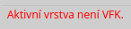
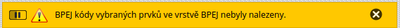
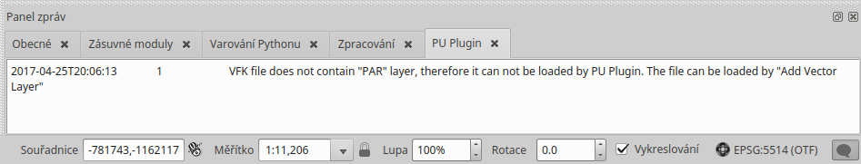

Komunikace s uživatelem¶
Zásuvný modul komunikuje s uživatelem třemi způsoby:
- Stavový řádek představuje nejčastější způsob zobrazování zpráv zásuvného modulu. Když nevíte jak postupovat, zde s největší pravděpodobností najdete potřebné informace. Běžné zprávy mají černou barvu písma, důležité zprávy se zobrazují červeně.

Figure 1: Stavový řádek – důležitá zpráva
- Pole zpráv je standardní způsob komunikace mezi programem QGIS a uživatelem. Zobrazuje pole v horní části mapového okna, které může být nastaveno tak, že po určité době samo zmizí, nebo vyžaduje manuální zavření. Zásuvný modul využívá této komunikace pouze pro zobrazení významných zpráv, které by neměly být uživatelem opomenuty.

Figure 2: Pole zpráv – zpráva upozornění
Logování je posledním prostředkem pro předávání informací, který zásuvný modul používá. Informace v anglickém jazyce, zejména chybové hlášky, zapisuje do vlastní záložky s názvem PU Plugin. Panel logovacích zpráv můžete zobrazit kliknutím na ikonu v pravém dolním rohu QGISu.

Figure 3: Panel logovacích zpráv